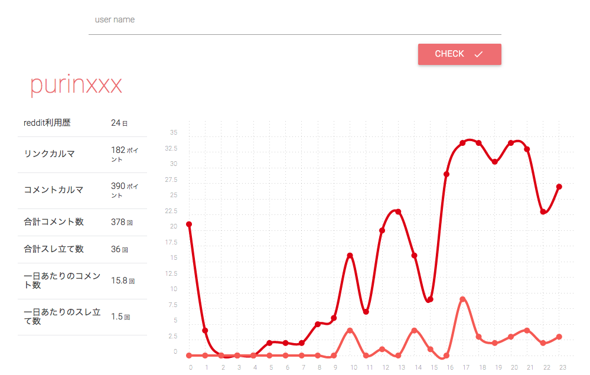

自主制作
Reddit Checker
webアプリケーションの制作
さくらのvpsを買ってレンタルサーバーでは無理だったwebアプリケーションを動かせるようになったのでphpのlaravelというフレームワークを使って実装しました。redditのユーザー名からコメント投稿時刻をグラフにするサイトです。
URL http://dnote.biz/r/
制作ソフト sublimetext MAMP
使用技術 html5 css3 jquery php svg materializecss chartistjs laravel redditAPI
製作期間 １ヶ月
関連する作品